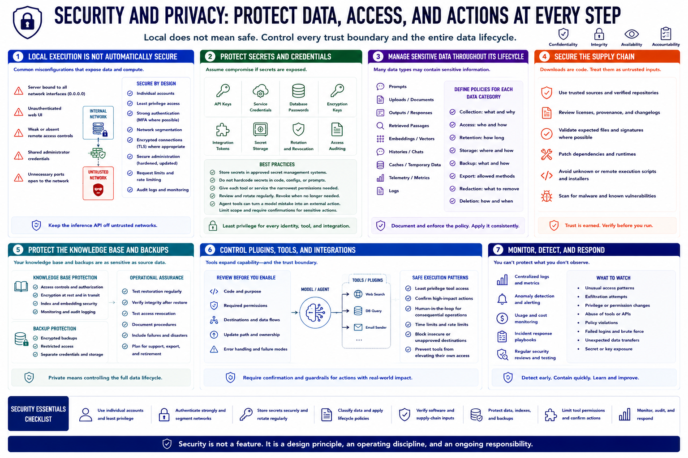

Security and Privacy Controls
Connecting to LMS... Progress: in progress

Narration
Local execution does not automatically create security. A server bound to all network interfaces, an unauthenticated web UI, weak remote access, or shared administrator credentials can expose prompts, documents, and compute.
Use individual accounts, least privilege, strong authentication, segmentation, encrypted connections where appropriate, secure administration, request limits, and audit logs. Keep the inference API off untrusted networks.
Protect API keys, service credentials, database passwords, encryption keys, and integration tokens in approved secret storage. Give each tool narrow permissions. Agent tools can turn a model mistake into an external action.
Prompts, uploads, outputs, retrieved passages, embeddings, histories, caches, telemetry, and logs may contain sensitive data. Define collection, access, retention, backup, export, redaction, and deletion for each category.
Treat model, embedding, interface, plugin, and runtime downloads as supply-chain inputs. Use trusted sources, review licenses and provenance, validate expected files where appropriate, patch dependencies, and avoid unknown execution scripts.
Protect the knowledge base and backups to the same standard as source documents. Test restoration and access revocation. Private means the full data lifecycle is controlled, including failure, support, export, and retirement.
Plugins and tools expand the trust boundary. Review their code, permissions, destinations, update path, and error behavior. Require confirmation for consequential actions and prevent a model from silently broadening its own access.